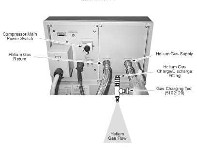

Illustration 3: Compressor Pressure Gauge

| NOTE: | The supply pressure gauge displays static pressure when the compressor is off and high-side dynamic (operating) pressure when the compressor is on. |
Illustration 3: Compressor Pressure Gauge
Illustration 4: Purging the Gas Charging Tool
